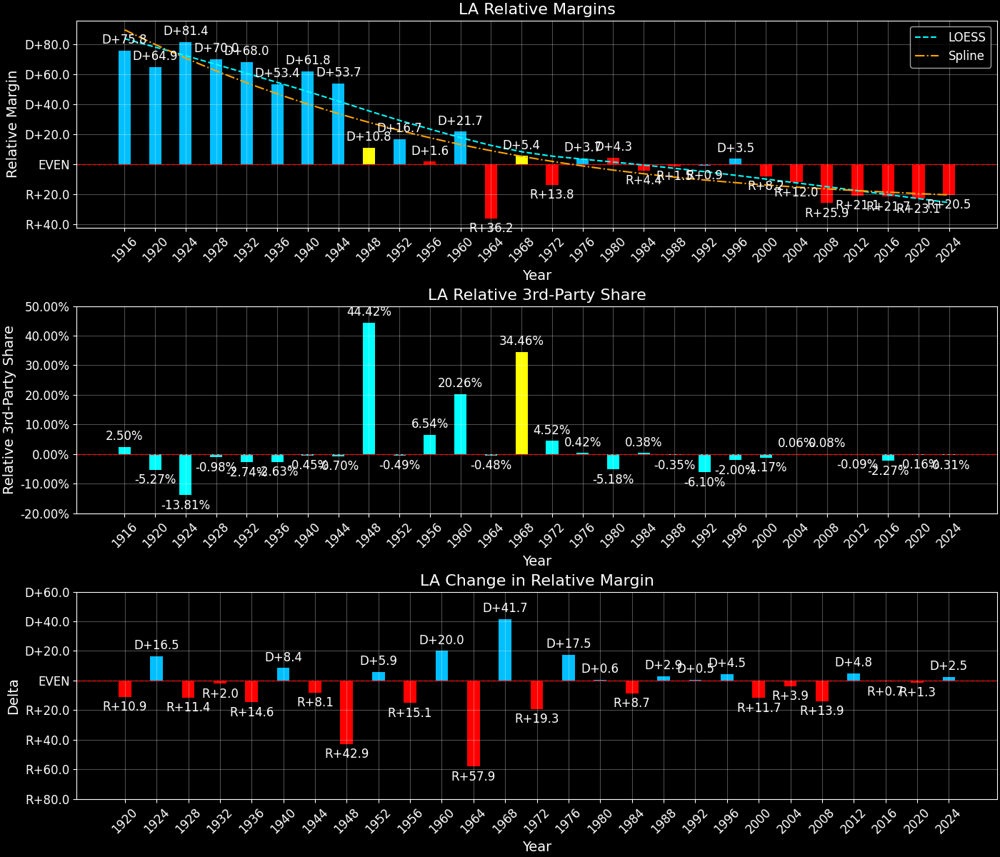
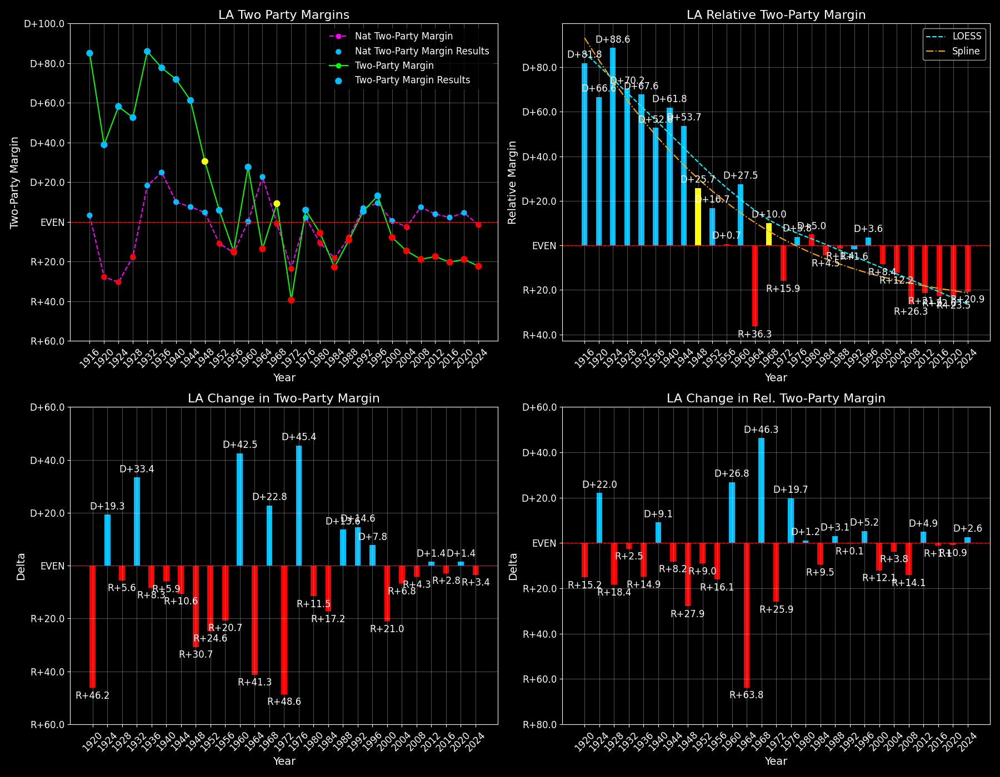

Louisiana (LA) — Statewide

Margins · 3rd-Party share · Pres. deltas

Relative margins · Relative 3rd-Party · Rel. deltas
Louisiana (LA) — Total Data
| Year | EVs | D | R | State Margin | Nat. Margin | Rel. Margin | Total votes |
|---|---|---|---|---|---|---|---|
| 1968 | 10 | 311,609(28.3%) | 257,277(23.4%) | D+4.9 | R+0.6 | D+5.5 | 1,099,186 |
| 1972 | 10 | 298,142(30.3%) | 687,268(69.7%) | R+39.5(Δ R+44.4) | R+23.5(Δ R+23.0) | R+16.0(Δ R+21.5) | 985,410 |
| 1976 | 10 | 661,328(53.0%) | 587,020(47.0%) | D+6.0(Δ D+45.4) | D+2.2(Δ D+25.7) | D+3.8(Δ D+19.7) | 1,248,348 |
| 1980 | 10 | 705,431(46.2%) | 795,502(52.1%) | R+5.9(Δ R+11.8) | R+9.9(Δ R+12.1) | D+4.0(Δ D+0.2) | 1,527,278 |
| 1984 | 10 | 651,593(38.6%) | 1,037,301(61.4%) | R+22.8(Δ R+16.9) | R+18.1(Δ R+8.2) | R+4.7(Δ R+8.7) | 1,688,894 |
| 1988 | 10 | 717,430(44.8%) | 883,702(55.2%) | R+10.4(Δ D+12.5) | R+7.7(Δ D+10.4) | R+2.6(Δ D+2.1) | 1,601,132 |
| 1992 | 9 | 815,971(45.6%) | 733,386(41.0%) | D+4.6(Δ D+15.0) | D+5.6(Δ D+13.3) | R+1.0(Δ D+1.7) | 1,789,761 |
| 1996 | 9 | 927,836(52.0%) | 712,586(39.9%) | D+12.1(Δ D+7.5) | D+8.6(Δ D+3.0) | D+3.5(Δ D+4.5) | 1,783,828 |
| 2000 | 9 | 792,344(44.9%) | 927,871(52.6%) | R+7.7(Δ R+19.7) | D+0.5(Δ R+8.0) | R+8.2(Δ R+11.7) | 1,764,553 |
| 2004 | 9 | 820,299(42.2%) | 1,102,169(56.7%) | R+14.5(Δ R+6.8) | R+2.5(Δ R+3.0) | R+12.0(Δ R+3.8) | 1,943,036 |
| 2008 | 9 | 769,544(39.6%) | 1,147,505(59.0%) | R+19.4(Δ R+4.9) | D+7.3(Δ D+9.7) | R+26.7(Δ R+14.6) | 1,945,321 |
| 2012 | 8 | 809,141(40.6%) | 1,152,262(57.8%) | R+17.2(Δ D+2.2) | D+3.9(Δ R+3.4) | R+21.1(Δ D+5.6) | 1,994,065 |
| 2016 | 8 | 780,153(38.4%) | 1,178,638(58.1%) | R+19.6(Δ R+2.4) | D+2.1(Δ R+1.8) | R+21.7(Δ R+0.7) | 2,029,031 |
| 2020 | 8 | 856,034(39.9%) | 1,255,776(58.5%) | R+18.6(Δ D+1.0) | D+4.4(Δ D+2.3) | R+23.1(Δ R+1.3) | 2,147,940 |
| 2024 | 8 | 766,870(38.2%) | 1,208,505(60.2%) | R+22.0(Δ R+3.4) | R+1.5(Δ R+6.0) | R+20.5(Δ D+2.6) | 2,006,975 |
Column explanations
- Δ
- Change (delta) in the value from the previous election year.
- Year
- Election year.
- EVs
- Number of electoral votes allocated to this state or unit.
- D
- Number of votes for the Democratic candidate (raw count(pct%)).
- R
- Number of votes for the Republican candidate (raw count(pct%)).
- State Margin
- Margin between the two major-party candidates, including third-party votes ((D - R)/total).
- Nat. Margin
- The national presidential margin for that year, including third-party votes ((D_total - R_total)/total_votes).
- Rel. Margin
- The presidential margin relative to the national presidential margin (Margin - Nat. Margin).
- Total votes
- Total voter turnout or ballots cast (when provided).
Louisiana (LA) — Third-Party Data
| Year | Other votes | State 3rd-Party Share | 3rd-Party Nat. Share | 3rd-Party Rel. Share |
|---|---|---|---|---|
| 1968 | 530,300(48.2%) | 48.24% | 13.59% | 34.66% |
| 1972 | 0(0.0%) | 0.00% | 0.09% | -0.09% |
| 1976 | 0(0.0%) | 0.00% | 0.33% | -0.33% |
| 1980 | 26,345(1.7%) | 1.72% | 6.98% | -5.25% |
| 1984 | 0(0.0%) | 0.00% | 0.12% | -0.12% |
| 1988 | 0(0.0%) | 0.00% | 0.21% | -0.21% |
| 1992 | 240,404(13.4%) | 13.43% | 19.23% | -5.80% |
| 1996 | 143,406(8.0%) | 8.04% | 9.68% | -1.64% |
| 2000 | 44,338(2.5%) | 2.51% | 3.65% | -1.14% |
| 2004 | 20,568(1.1%) | 1.06% | 0.84% | 0.22% |
| 2008 | 28,272(1.5%) | 1.45% | 1.38% | 0.08% |
| 2012 | 32,662(1.6%) | 1.64% | 1.62% | 0.02% |
| 2016 | 70,240(3.5%) | 3.46% | 5.54% | -2.07% |
| 2020 | 36,130(1.7%) | 1.68% | 1.84% | -0.16% |
| 2024 | 31,600(1.6%) | 1.57% | 1.88% | -0.31% |
Column explanations
- Year
- Election year.
- Other votes
- Number of votes for third-party (other) candidates (raw count(pct%)).
- State 3rd-Party Share
- Share of the vote received by third-party (other) candidates.
- 3rd-Party Nat. Share
- The national third-party share for that year (3rd-Party votes / total votes).
- 3rd-Party Rel. Share
- Third-party share relative to the national third-party share (3rd-Party share - Nat. 3rd-Party share).

Two-party margins · relative · deltas
Louisiana (LA) — Two-Party Data
| Year | 2-Party Margin | 2-Party Nat. Margin | 2-Party Rel. Margin |
|---|---|---|---|
| 1968 | D+9.6 | R+0.7 | D+10.2 |
| 1972 | R+39.5(Δ R+49.0) | R+23.6(Δ R+22.9) | R+15.9(Δ R+26.2) |
| 1976 | D+6.0(Δ D+45.4) | D+2.2(Δ D+25.8) | D+3.7(Δ D+19.7) |
| 1980 | R+6.0(Δ R+12.0) | R+10.6(Δ R+12.8) | D+4.6(Δ D+0.9) |
| 1984 | R+22.8(Δ R+16.8) | R+18.1(Δ R+7.5) | R+4.7(Δ R+9.3) |
| 1988 | R+10.4(Δ D+12.5) | R+7.8(Δ D+10.4) | R+2.6(Δ D+2.1) |
| 1992 | D+5.3(Δ D+15.7) | D+6.9(Δ D+14.7) | R+1.6(Δ D+1.0) |
| 1996 | D+13.1(Δ D+7.8) | D+9.5(Δ D+2.6) | D+3.7(Δ D+5.2) |
| 2000 | R+7.9(Δ R+21.0) | D+0.5(Δ R+8.9) | R+8.4(Δ R+12.1) |
| 2004 | R+14.7(Δ R+6.8) | R+2.5(Δ R+3.0) | R+12.2(Δ R+3.8) |
| 2008 | R+19.7(Δ R+5.1) | D+7.4(Δ D+9.8) | R+27.1(Δ R+14.9) |
| 2012 | R+17.5(Δ D+2.2) | D+3.9(Δ R+3.4) | R+21.4(Δ D+5.7) |
| 2016 | R+20.3(Δ R+2.8) | D+2.2(Δ R+1.7) | R+22.6(Δ R+1.1) |
| 2020 | R+18.9(Δ D+1.4) | D+4.5(Δ D+2.3) | R+23.5(Δ R+0.9) |
| 2024 | R+22.4(Δ R+3.4) | R+1.6(Δ R+6.1) | R+20.8(Δ D+2.7) |
Column explanations
- Δ
- Change (delta) in the value from the previous election year.
- Year
- Election year.
- 2-Party Margin
- Margin between the two major-party candidates, ignoring third-party votes ((D - R)/(D + R)).
- 2-Party Nat. Margin
- The national presidential margin for that year, including third-party votes ((D_total - R_total)/total_votes).
- 2-Party Rel. Margin
- The presidential margin relative to the national presidential margin (Margin - Nat. Margin).